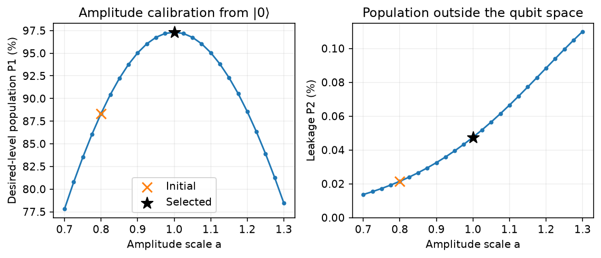
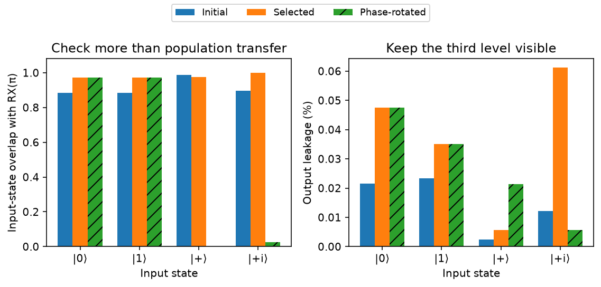
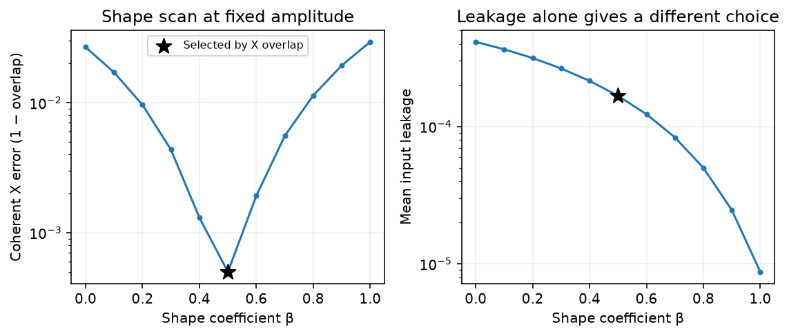

Calibrating a quantum gate¶
-
Track
Foundations
-
Downloads
In this tutorial, we calibrate a control pulse to approximate an X gate. Starting with an imperfect amplitude, we run a series of trial pulses and select the one that best transfers population from \(|0\rangle\) to \(|1\rangle\). We then check its action on superpositions to see how well it implements the desired operation.
You need basic Python, qubit states, and X rotations. The Bell-state tutorial introduces the program and result workflow. We use FatQat's supplied single-transmon model, which includes an extra energy level \(|2\rangle\) beyond the two qubit states. Population can enter this level during a pulse; we call it leakage. All calibration results here refer to this simulation model.
Define the target¶
Our target is \(R_X(\pi)\), an X gate up to a global phase. Besides exchanging the basis states, it preserves \(|+\rangle=(|0\rangle+|1\rangle)/\sqrt{2}\) up to a global phase. A common phase on all amplitudes has no observable effect, so our comparisons will ignore it.
We first build the ideal rotation as a Program and run it with the general
Simulator. In unitary mode, the result is the \(2\times2\) matrix that
we will use as our reference.
import matplotlib.pyplot as plt
import numpy as np
import fatqat as fq
import fatqat.operations as ops
np.set_printoptions(precision=6, suppress=True)
final_state_only = {"counts": False, "final_state": True}
reference_program = fq.Program(1)
reference_program.add(ops.RX(np.pi), 0)
reference = (
fq.simulator.Simulator(method="unitary")
.run(reference_program, result_config=final_state_only)
.result()
.get_unitary()
)
assert reference.shape == (2, 2)
assert np.allclose(reference.conj().T @ reference, np.eye(2), atol=1e-12)
print("Target RX(pi):")
print(reference)
Runtime result
Target RX(pi):
[[0.+0.j 0.-1.j]
[0.-1.j 0.+0.j]]
Build an imperfect pulse¶
Next, load the transmon model and create a statevector emulator. Each run starts in physical \(|0\rangle\). We leave noise and measurement out of these runs so that we can inspect the pulse's final amplitudes. See the transmon guide for more on the model setup.
model_document = fq.emulator.load_model_document("transmon.single")
model = fq.emulator.TransmonModel.from_document(model_document)
backend = fq.emulator.TransmonEmulator(model, method="statevector")
We use a smooth envelope that starts and ends at zero. The duration \(T\) stays fixed at 12 nanoseconds (ns); the dimensionless scale \(a\) controls the amplitude:
The waveform gives the full Rabi rate in radians per nanosecond (rad/ns). FatQat includes the factor of one half when applying the drive Hamiltonian. At \(a=1\), the envelope has area \(\pi\), which would give the desired rotation for an ideal resonantly driven two-level system. Coupling to the third level makes this a starting estimate for the transmon pulse.
We sample the envelope at 81 times and connect it to the drive on q0
through PulseControl. SampledWaveform interpolates between the samples.
The helpers below put the pulse in a Program with PulseOperation and
return its final statevector. We start at an amplitude scale of 0.8.
duration = 12.0 # ns
times = np.linspace(0.0, duration, 81)
envelope = (2 * np.pi / duration) * np.sin(np.pi * times / duration) ** 2
def pulse_program(drive_samples, *, measured=False):
waveform = fq.emulator.SampledWaveform(tuple(times), tuple(drive_samples))
control = fq.emulator.PulseControl(model.control.drive("q0"), waveform)
program = fq.Program(1, 1) if measured else fq.Program(1)
program.add(ops.PulseOperation(duration, (control,)))
if measured:
program.measure(0, 0)
return program
def make_pulse_program(amplitude_scale):
return pulse_program(amplitude_scale * envelope)
def run_state(program):
state = (
backend.run(program, result_config=final_state_only).result().get_statevector()
)
assert state.shape == (3,)
assert np.all(np.isfinite(state))
assert np.isclose(np.vdot(state, state).real, 1.0, atol=2e-6, rtol=0)
return state
initial_scale = 0.8
initial_program = make_pulse_program(initial_scale)
initial_state = run_state(initial_program)
initial_populations = np.abs(initial_state) ** 2
print(f"Duration: {duration:g} ns; samples: {len(times)}")
print(f"Initial peak Rabi rate: {initial_scale * envelope.max():.6f} rad/ns")
print("Initial [P0, P1, P2]:", initial_populations)
Runtime result
Duration: 12 ns; samples: 81
Initial peak Rabi rate: 0.418879 rad/ns
Initial [P0, P1, P2]: [0.116243 0.883542 0.000215]
The statevector contains three amplitudes, one for each physical level.
Their squared magnitudes give P0, P1, and P2. Most of the population
reaches \(|1\rangle\), but some remains in \(|0\rangle\) and a small
amount leaks into \(|2\rangle\). We will use P1 to choose the amplitude
and track P2 alongside it.
Collect data and select an amplitude¶
Our selection rule is to choose the tested amplitude with the largest
P1. We scan from 0.7 to 1.3, around the first intended rotation; extending
the range much further could include additional rotation cycles.
For each amplitude, the loop builds a pulse program and collects its
populations through run().result(). After finding the maximum, we rerun
that pulse and record its parameters in a dictionary.
amplitude_scales = np.linspace(0.7, 1.3, 25)
scan_populations = []
for amplitude_scale in amplitude_scales:
state = run_state(make_pulse_program(amplitude_scale))
scan_populations.append(np.abs(state) ** 2)
scan_populations = np.array(scan_populations)
best_index = int(np.argmax(scan_populations[:, 1]))
selected_scale = float(amplitude_scales[best_index])
selected_program = make_pulse_program(selected_scale)
selected_state = run_state(selected_program)
selected_populations = np.abs(selected_state) ** 2
assert 0 < best_index < len(amplitude_scales) - 1
assert np.allclose(
selected_populations, scan_populations[best_index], atol=2e-6, rtol=0
)
assert selected_populations[1] > initial_populations[1] + 0.05
calibrated_parameters = {"duration_ns": duration, "amplitude_scale": selected_scale}
print("Best tested parameters for transfer from |0>:", calibrated_parameters)
for label, scale, populations in (
("Initial", initial_scale, initial_populations),
("Selected", selected_scale, selected_populations),
):
print(
f"{label:8s} a={scale:.3f}: P0={populations[0]:.6f}, "
f"P1={populations[1]:.6f}, P2={populations[2]:.6f}"
)
figure, axes = plt.subplots(1, 2, figsize=(8, 3.5))
for axis, level, factor, label in (
(axes[0], 1, 100, "Desired-level population P1 (%)"),
(axes[1], 2, 100, "Leakage P2 (%)"),
):
axis.plot(amplitude_scales, factor * scan_populations[:, level], ".-", color="C0")
axis.scatter(
initial_scale,
factor * initial_populations[level],
marker="x",
s=85,
color="C1",
label="Initial",
zorder=3,
)
axis.scatter(
selected_scale,
factor * selected_populations[level],
marker="*",
s=130,
color="black",
label="Selected",
zorder=3,
)
axis.set(xlabel="Amplitude scale a", ylabel=label)
axis.grid(alpha=0.2)
axes[0].set_title("Amplitude calibration from |0⟩")
axes[1].set_title("Population outside the qubit space")
axes[1].set_ylim(bottom=0)
axes[0].legend()
figure.tight_layout()
plt.show()
Runtime result
Best tested parameters for transfer from |0>: {'duration_ns': 12.0, 'amplitude_scale': 1.0}
Initial a=0.800: P0=0.116243, P1=0.883542, P2=0.000215
Selected a=1.000: P0=0.026313, P1=0.973212, P2=0.000475

The selected pulse transfers more population to \(|1\rangle\), with more leakage than the initial pulse. It is the best tested amplitude for our state-transfer objective, with some population still outside the desired level.
The scan uses probabilities calculated from the statevector, so it has no shot noise. Numerical integration error remains. Our selection applies to this model, pulse duration, and grid; a finer grid could refine the amplitude.
Validate the operation on other inputs¶
The amplitude scan used only \(|0\rangle\). A gate must also act correctly on other inputs. We run the initial and selected pulses with a second emulator in unitary mode. The returned \(3\times3\) operator describes the full physical evolution; multiplying it by an input state gives the corresponding output.
We test \(|0\rangle\), \(|1\rangle\), \(|+\rangle\), and \(|+i\rangle=(|0\rangle+i|1\rangle)/\sqrt{2}\). For each input, we compare the pulse output with the ideal output using their input-state overlap, the squared magnitude of their inner product. An overlap of one means the states agree up to a global phase.
The helper appends a zero amplitude for \(|2\rangle\) to each logical input and target state. It keeps the full pulse output without renormalizing, so leakage reduces the overlap.
unitary_backend = fq.emulator.TransmonEmulator(model, method="unitary")
def run_unitary(program):
operator = (
unitary_backend.run(program, result_config=final_state_only)
.result()
.get_unitary()
)
assert operator.shape == (3, 3)
assert np.all(np.isfinite(operator))
assert np.allclose(operator.conj().T @ operator, np.eye(3), atol=2e-5, rtol=0)
return operator
probe_labels = ("|0⟩", "|1⟩", "|+⟩", "|+i⟩")
probes = np.array([[1, 0], [0, 1], [1, 1], [1, 1j]], dtype=complex)
probes[2:] /= np.sqrt(2)
def probe_diagnostics(operator):
overlaps, leakages = [], []
for psi in probes:
output = operator @ np.append(psi, 0)
target = np.append(reference @ psi, 0)
overlaps.append(abs(np.vdot(target, output)) ** 2)
leakages.append(abs(output[2]) ** 2)
return np.array(overlaps), np.array(leakages)
def coherent_x_overlap_and_leakage(operator):
"""Compare the logical operation with RX(pi), retaining leakage loss."""
logical = operator[:2, :2]
overlap = abs(np.trace(reference.conj().T @ logical)) ** 2 / 4
mean_leakage = 1 - np.trace(logical.conj().T @ logical).real / 2
return float(overlap), float(mean_leakage)
initial_operator = run_unitary(initial_program)
selected_operator = run_unitary(selected_program)
for operator, state in (
(initial_operator, initial_state),
(selected_operator, selected_state),
):
assert np.allclose(operator[:, 0], state, atol=2e-6, rtol=0)
Alongside the individual states, we compare the whole logical operation using
coherent_x_overlap_and_leakage. Its first result, coherent X overlap,
equals one for the target operation up to a global phase and decreases with
coherent error or leakage. This quantity differs from average gate fidelity.
The second result is the mean leakage over the two logical basis inputs.
The operator comparison
Let \(A=U[:2,:2]\) be the logical block of the physical operator and \(V\) the ideal rotation. The matrix inner product is \(\mathrm{Tr}(V^\dagger A)\). Dividing its squared magnitude by \(2^2\) gives [ C_X=\frac{|\mathrm{Tr}(V^\dagger A)|^2}{4}. ] A global phase multiplies the trace by a number of magnitude one, so it leaves \(C_X\) unchanged. We keep \(A\) unnormalized: any leakage reduces its norm. The average survival probability of the two logical basis inputs is \(\mathrm{Tr}(A^\dagger A)/2\), giving mean leakage \(L=1-\mathrm{Tr}(A^\dagger A)/2\).
Check sensitivity to the drive phase¶
Before comparing the results, we add a pulse with a deliberate phase error.
Multiplying the selected waveform by 1j shifts its drive phase by a quarter
turn, from the X to the Y quadrature, while keeping its amplitude unchanged.
This gives us a way to test whether the population check can distinguish
rotations about different axes.
phase_program = pulse_program(1j * selected_scale * envelope)
phase_operator = run_unitary(phase_program)
operators = (initial_operator, selected_operator, phase_operator)
pulse_labels = ("Initial", "Selected", "Phase-rotated")
probe_results = [probe_diagnostics(operator) for operator in operators]
gate_results = np.array([coherent_x_overlap_and_leakage(u) for u in operators])
all_diagnostics = np.concatenate(
[gate_results.ravel(), np.array(probe_results).ravel()]
)
assert np.all(np.isfinite(all_diagnostics))
assert np.all((all_diagnostics >= -2e-5) & (all_diagnostics <= 1 + 2e-5))
assert gate_results[1, 0] > gate_results[0, 0]
assert np.allclose(
np.abs(phase_operator[:, 0]) ** 2, selected_populations, atol=2e-6, rtol=0
)
assert probe_results[1][0][2] > 0.9 and probe_results[2][0][2] < 0.01
assert gate_results[2, 0] < 0.01
print("Pulse Coherent X overlap Mean input leakage")
for label, (overlap, leakage) in zip(pulse_labels, gate_results):
print(f"{label:14s} {overlap:.6f} {leakage:.6f}")
figure, axes = plt.subplots(1, 2, figsize=(8, 3.8))
positions = np.arange(len(probes))
width = 0.25
for index, (label, (overlaps, leakages)) in enumerate(zip(pulse_labels, probe_results)):
offset = (index - 1) * width
hatch = "//" if index == 2 else None
axes[0].bar(positions + offset, overlaps, width, label=label, hatch=hatch)
axes[1].bar(positions + offset, 100 * leakages, width, hatch=hatch)
for axis in axes:
axis.set(xticks=positions, xticklabels=probe_labels, xlabel="Input state")
axes[0].set(
ylabel="Input-state overlap with RX(π)",
ylim=(0, 1.08),
title="Check more than population transfer",
)
figure.legend(
*axes[0].get_legend_handles_labels(), loc="upper center", ncol=3, fontsize=9
)
axes[1].set(ylabel="Output leakage (%)", title="Keep the third level visible")
figure.tight_layout(rect=(0, 0, 1, 0.9))
plt.show()
Runtime result
Pulse Coherent X overlap Mean input leakage
Initial 0.883542 0.000224
Selected 0.973212 0.000413
Phase-rotated 0.000000 0.000413

The selected pulse improves both population transfer and coherent X overlap. For the initial and selected pulses, these two values agree to numerical precision, a property of this symmetric pulse family.
The phase-rotated pulse gives the same basis-state transfer, but its action on \(|+\rangle\) is close to orthogonal to the target output. Its coherent X overlap is also near zero. The superposition checks distinguish the two drive axes even though the population calibration cannot.
Compare with a measured bit¶
We can also sample the selected pulse's measurement outcomes. For this, we build a separate program with a classical bit and terminal measurement and return to the statevector backend; unitary execution requires an unmeasured program.
This backend reports physical level 0 as bit 0, and both levels 1 and
2 as bit 1. We therefore expect the frequency of 1 to approach
P1 + P2 as we increase the number of shots. This binary readout groups
successful transfer and leakage into the same outcome.
shots = 1024
measured_program = pulse_program(selected_scale * envelope, measured=True)
counts = (
backend.run(
measured_program,
shots=shots,
simulation_config={"seed": 7},
result_config={"counts": True, "final_state": False},
)
.result()
.get_counts()
)
frequency_one = counts.get("1", 0) / shots
expected_one = selected_populations[1] + selected_populations[2]
sampling_tolerance = 5 * np.sqrt(expected_one * (1 - expected_one) / shots) + 1 / shots
assert sum(counts.values()) == shots
assert abs(frequency_one - expected_one) < sampling_tolerance
print("Seeded counts:", counts)
print(f"Measured frequency of 1: {frequency_one:.6f}")
print(f"Expected P1 + P2: {expected_one:.6f}")
print(f"P1 alone: {selected_populations[1]:.6f}")
Runtime result
Seeded counts: {'0': 23, '1': 1001}
Measured frequency of 1: 0.977539
Expected P1 + P2: 0.973687
P1 alone: 0.973212
The measured frequency agrees with P1 + P2 within shot noise. For this
pulse and shot count, the sampling uncertainty exceeds the leakage
contribution, so the counts cannot resolve the difference between P1 and
P1 + P2.
Amplitude tuning has improved transfer and coherent X overlap, with some coherent error and leakage remaining. The optional extension below uses a second pulse parameter to reduce those errors.
Optional: correct the pulse shape¶
We now add an imaginary component proportional to the envelope's derivative, giving a drive in the Y quadrature. This is a DRAG correction. We keep the duration and selected amplitude fixed and vary the dimensionless coefficient \(\beta\):
Here \(\alpha\) is the signed difference between adjacent transition frequencies. The model document stores it in gigahertz (GHz, or cycles/ns); we multiply by \(2\pi\) to obtain an angular rate in rad/ns. The derivative term divided by \(\alpha\) then has the same rad/ns units as the original drive.
Why a derivative quadrature?
A short pulse can excite the third level and shift phases within the qubit space. Adding a derivative quadrature allows us to adjust these effects. Motzoi et al. introduced this method in Simple pulses for elimination of leakage in weakly nonlinear qubits. We use its derivative correction here; the paper develops further corrections and their physical motivation. The choice of coefficient depends on the model, pulse, and calibration objective.
For this scan, our objective is the coherent X overlap. We choose the tested coefficient with the largest overlap, then rerun the pulse and check the same four input states. Holding amplitude fixed makes this a one-parameter shape calibration.
alpha = 2 * np.pi * model_document["parameters"]["subsystems"]["q0"]["anharmonicity"]
envelope_derivative = (
selected_scale
* (2 * np.pi / duration)
* (np.pi / duration)
* np.sin(2 * np.pi * times / duration)
)
def corrected_samples(beta):
return selected_scale * envelope - 1j * beta * envelope_derivative / alpha
betas = np.linspace(0.0, 1.0, 11)
shape_results = []
for beta in betas:
operator = run_unitary(pulse_program(corrected_samples(beta)))
shape_results.append(coherent_x_overlap_and_leakage(operator))
shape_results = np.array(shape_results)
shape_index = int(np.argmax(shape_results[:, 0]))
selected_beta = float(betas[shape_index])
corrected_program = pulse_program(corrected_samples(selected_beta))
corrected_operator = run_unitary(corrected_program)
corrected_metrics = coherent_x_overlap_and_leakage(corrected_operator)
corrected_state = run_state(corrected_program)
corrected_overlaps, corrected_leakages = probe_diagnostics(corrected_operator)
assert np.all(np.isfinite(shape_results))
assert np.all((shape_results >= -2e-5) & (shape_results <= 1 + 2e-5))
assert np.allclose(shape_results[0], gate_results[1], atol=2e-6, rtol=0)
assert np.allclose(corrected_metrics, shape_results[shape_index], atol=2e-6, rtol=0)
assert np.allclose(corrected_operator[:, 0], corrected_state, atol=2e-6, rtol=0)
assert 1 - corrected_metrics[0] < (1 - gate_results[1, 0]) / 10
assert corrected_metrics[1] < gate_results[1, 1]
assert np.all(corrected_overlaps > 0.99)
print(f"Fixed amplitude: {selected_scale:.3f}; best tested beta: {selected_beta:.2f}")
print(
f"Coherent X overlap: {corrected_metrics[0]:.6f}; "
f"mean input leakage: {corrected_metrics[1]:.6f}"
)
print("Input Overlap Leakage")
for label, overlap, leakage in zip(
probe_labels, corrected_overlaps, corrected_leakages
):
print(f"{label:6s} {overlap:.6f} {leakage:.6f}")
figure, axes = plt.subplots(1, 2, figsize=(8, 3.5))
for axis, values, label in (
(axes[0], 1 - shape_results[:, 0], "Coherent X error (1 − overlap)"),
(axes[1], shape_results[:, 1], "Mean input leakage"),
):
axis.semilogy(betas, values, ".-", color="C0")
axis.scatter(
selected_beta,
values[shape_index],
marker="*",
s=130,
color="black",
label="Selected by X overlap",
zorder=3,
)
axis.set(xlabel="Shape coefficient β", ylabel=label)
axis.grid(alpha=0.2)
axes[0].set_title("Shape scan at fixed amplitude")
axes[1].set_title("Leakage alone gives a different choice")
axes[0].legend(fontsize=8)
figure.tight_layout()
plt.show()
Runtime result
Fixed amplitude: 1.000; best tested beta: 0.50
Coherent X overlap: 0.999501; mean input leakage: 0.000167
Input Overlap Leakage
|0⟩ 0.999501 0.000168
|1⟩ 0.999501 0.000166
|+⟩ 0.999946 0.000023
|+i⟩ 0.999447 0.000252

The selected correction improves coherent X overlap and reduces mean leakage. The two curves reach their minima at different coefficients: the pulse with the least leakage has a larger X error. Our choice follows the operation we want to implement, and the input-state checks confirm the improvement.
To explore the effect of grid resolution, try shifting the original amplitude grid by half a step. Keep the duration and selection rule fixed, then compare the selected amplitude and coherent X overlap with this run.